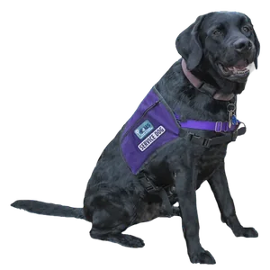

Products & Services
Our services bring together assistance-dog training and educational activities.

Assistance dogs
Dogs learn tasks that support people with disabilities in their daily lives.
- Training for individual needs
- Support for greater independence
Reading PAALS
Featured service: Children practice reading aloud to a calm dog without worrying about being judged.
- Reading practice
- A relaxed way to build confidence
School PAALS
Students learn about assistance dogs through school and after-school activities.
- Service-learning activities
- Teamwork and community involvement
How it works
- Choose a service.
Find the program that fits your needs. - Get in touch.
Ask about eligibility and availability. - Plan the next step.
Work with staff on an application or activity.